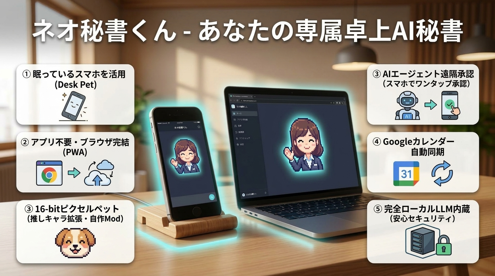
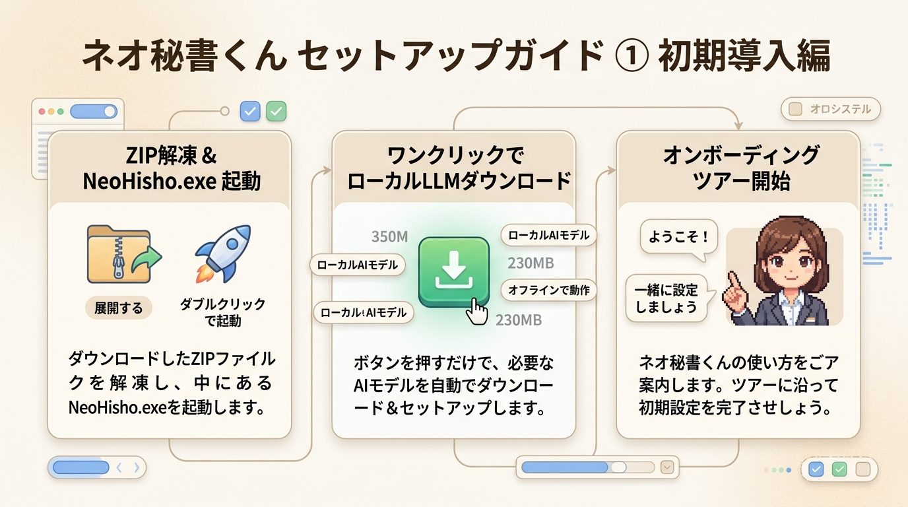
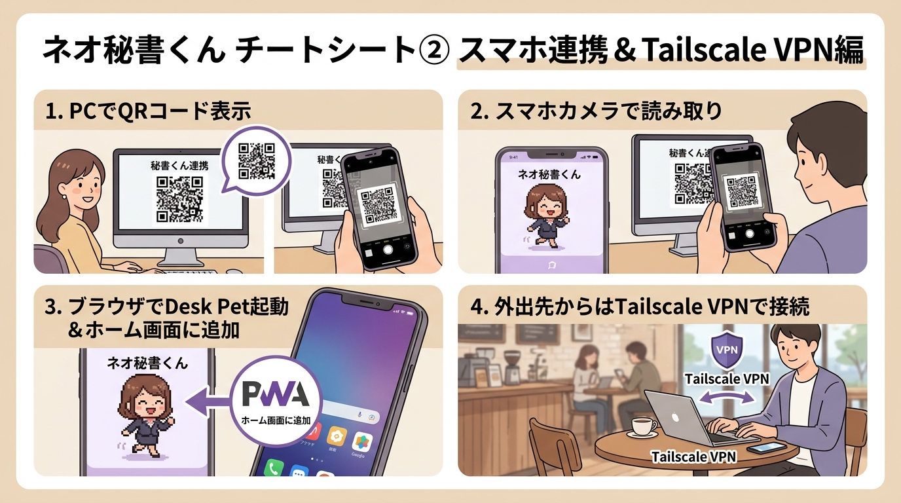
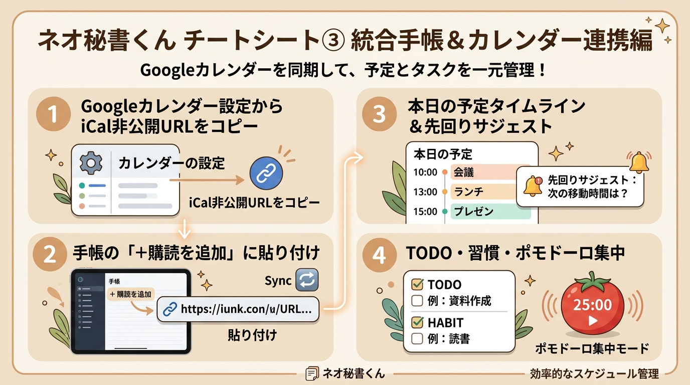
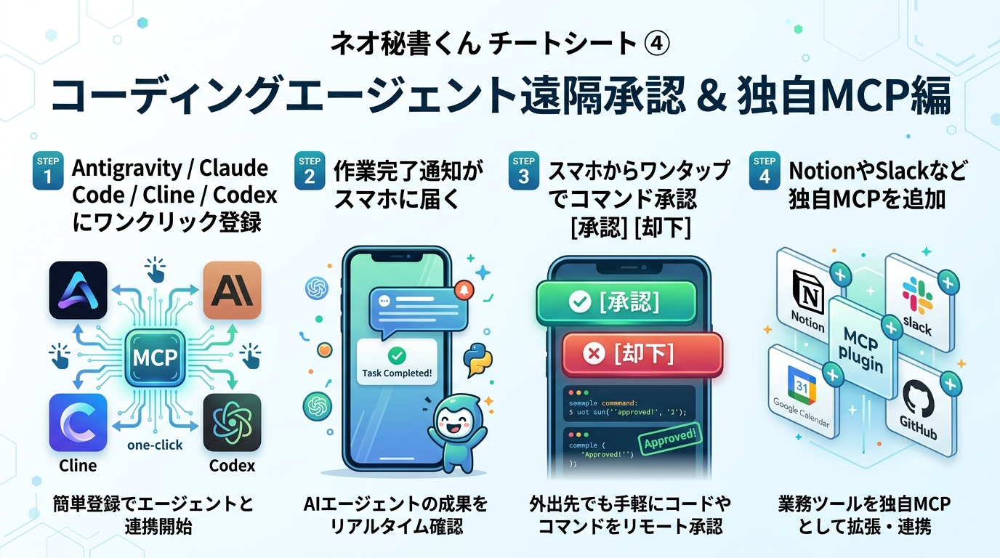
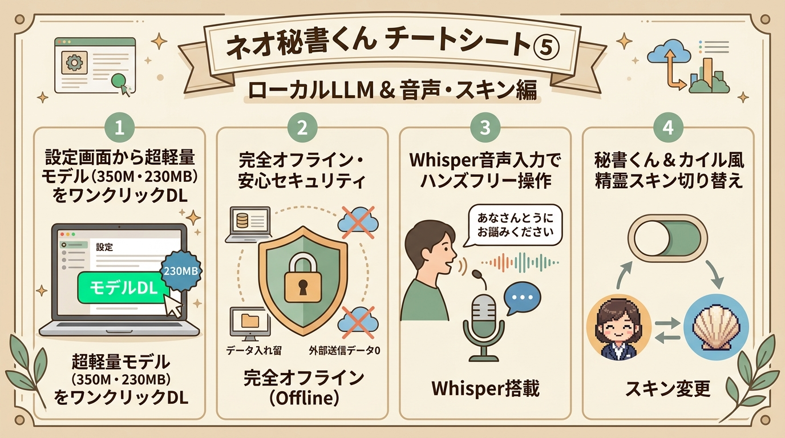

ネオ秘書くん - あなたの専属卓上AI秘書
「席を外してもAI開発が止まらない」。眠っていたスマホを卓上遠隔承認リモコン＆相棒ペットに転生させ、開発者の生命時間を最大化します。
🔥 ここがすごい！『ネオ秘書くん』の6大推しポイント
ネオ秘書くん リアル活用シーン集
「具体的にどんな場面でどう使うと便利なのか？」エンジニア・ビジネスパーソンの1日の活用事例です。
AIコーディング中の並行作業（離席・家事・別仕事・読書）
Antigravity、Claude Code、Cline、Codex などの自律型コーディングAIに大規模実装やリファクタリング、テストを投げているときの活用法です。
npm test やコマンド実行の許可を求めると、スマホの秘書くんがバイブと画面通知でお知らせ！[承認] をタップ、または Bluetoothイヤホンの音量キー操作で即座に承認！PCに戻る必要はありません。Googleカレンダー先回りリマインド ＆ タイムライン整理
朝一番にPCを立ち上げた際、Googleカレンダーから今日の予定と優先TODOを自動同期します。
明日18時に報告書提出 #仕事 !3 とチャットに打つだけで期限付きタスクを自動登録。ポモドーロ集中タイマー ＆ 過保護ケアリマインダー
作業に没頭しすぎて疲弊するのを防ぎ、健康的に最大の生産性を発揮します。
完全オフライン・超軽量ローカルLLMでの安全処理
社外クラウドに送信できない社内データや個人メモを、内包ローカルLLMで安全に処理します。

初期セットアップ・起動ガイド
ダウンロードから起動、超軽量ローカルLLMのワンクリック導入までの最短ステップです。
ZIPファイルを解凍して起動
社内共有フォルダからダウンロードした NeoHisho_v1.0.0_win64.zip を解凍し、中にある NeoHisho.exe をダブルクリックします。画面右下に可愛い秘書くんが現れます。
ワンクリックでローカルLLMを導入（APIキー不要）
秘書くんを右クリック ➔ 「⚙️ 設定」 ➔ 「🧠 AIモデル設定」 タブを開き、「⚡ 超軽量モデル (350M / 約230MB) を今すぐダウンロード」 をクリックします。約1分で完全オフラインAIがセットアップされます。
オンボーディングツアーで基本操作を確認
初回起動時に秘書くんが吹き出しでメニューや手帳の使い方をガイドします。いつでも設定画面から再開できます。
📘 ネオ秘書くん チートシート ①【初期セットアップ・起動編】
最終更新日: 2026-09-01
ネオ秘書くんのダウンロードから起動、初期設定までの最短1分ステップです。
🚀 1. 起動の手順（わずか2ステップ）
- 配布ZIPを展開
- 配布された
NeoHisho_v1.0.0_win64.zipをお好きなフォルダに解凍します。
NeoHisho.exe（またはstart.bat）をダブルクリック
- 画面右下に可愛い秘書くん（またはカイル風精霊）が登場します！
- ※ 初回起動時は「オンボーディングツアー」が始まり、秘書くんが基本操作を吹き出しで案内してくれます。
🔒 2. APIキー不要！完全オフラインで使い始める（おすすめ）
社外クラウドへのデータ送信なしで安全に使いたい場合、ワンクリックでローカルLLMを導入できます：
- 秘書くんを 右クリック ➔「⚙️ 設定」 を開く
- 「🧠 AIモデル設定」 タブ内の「📦 内包ローカルLLM」欄へ行く
- 「⚡ 超軽量モデル (350M / 約230MB) を今すぐダウンロード」 ボタンをクリック！
- 約1分でダウンロードと設定が完了し、完全オフラインAIとして即座に動き始めます。
⚙️ 3. 設定画面の全体像（4大タブ）
| 設定タブ | 主な設定内容 | 活用シーン |
|---|---|---|
| 🧠 AIモデル設定 | 超軽量ローカルLLM、Gemini、Claude、OpenCode等の切り替え | オフライン利用・高速クラウドAI |
| 🤖 外部AI・MCP連携 | Antigravity / Claude Code / Cline / Codex 連携、独自MCP追加 | コーディングエージェント遠隔承認 |
| 📅 外部ツール | Googleカレンダー同期 (iCal)、Tailscale外出先設定、GitHub | スケジュール先回り・タスク連携 |
| 📖 使い方ガイド | 全機能のクイックマニュアル、ツアー再開ボタン | 操作に迷ったときの確認 |
💡 困ったときは？
- 秘書くんに向かって 「カレンダー連携はどうやるの？」「スマホと繋ぐには？」「エージェント承認って何？」 とチャットで話しかけてみてください。秘書くん自身がステップバイステップで案内してくれます！

スマホ連携 ＆ Tailscale VPN接続ガイド
使っていないスマホを卓上スマートデバイス化。社内Wi-Fiでも、カフェ等の出先からでも安全に接続できます。
2. スマホの標準カメラでQRコードを読み取る
3. ブラウザで開き、「ホーム画面に追加」 すれば全画面アプリ（PWA）として動作します！
2. PCターミナルで転送コマンドを実行：
tailscale serve 8765
※ `8765` は既定ポートです。`NEO_HISHO_PORT`（OS環境変数または .env）で変更した場合はコマンドとURLのポートを読み替えてください。
📱 ネオ秘書くん チートシート ②【スマホ接続・QRコード・VPN編】
最終更新日: 2026-09-01
眠っているスマホを、机の上のスマート卓上秘書（Desk Pet）に変身させる手順です。
アプリのインストールは一切不要！ブラウザだけで完結します。
📲 1. 基本：社内・自宅Wi-Fiでの接続（3ステップ）
PCとスマホが同じWi-Fiに接続されている場合の接続手順です：
[PC側] 右クリック「📱 スマホ連携」 ➔ [スマホ側] カメラでQR読取 ➔ [スマホ側] ブラウザで即起動！- PC側のネオ秘書くんを開く
- 秘書くんを右クリック ➔ 「📱 スマホDesk Pet（QR表示）」 をクリックします。
- スマホの標準カメラでQRコードを読み取る
- 画面に表示されたQRコードをスマホでスキャンし、URLをブラウザ（Safari / Chrome）で開きます。
- Desk Petが表示されれば完了！
- PC上の秘書くんとリアルタイムで同期し、スマホ上でもトコトコ動き始めます。
🌐 2. 応用：外出先・カフェ・別ネットワークからの接続（Tailscale VPN）
カフェの公衆Wi-Fi（端末間通信が禁止されたネットワーク）や、出張先・テレワーク環境から接続する場合の手順です：
[事前準備: PCとスマホにTailscaleを導入] ➔ [PCで serve 実行] ➔ [外出先から安全接続！]3ステップ設定手順
- PCとスマホの両方に Tailscale（無料メッシュVPN）をインストール
- 同じアカウントでログインし、VPNをオンにします。
- PCのターミナルで転送コマンドを実行
tailscale serve 8765- ネオ秘書くんの設定画面でホスト名を保存
- 設定画面（⚙️）➔「📅 外部ツール」タブ ➔「🌐 外出先接続 (Tailscale VPN)」欄に、PCのTailscaleホスト名（例:
my-pc.tailXXXX.ts.net）を入力して「💾 保存」。 - 👉 次回からQRコードダイアログに「🌐 外出先接続用URL」が表示され、出先からでもワンタップで繋がります！
⭐ 3. おすすめ！「ホーム画面に追加」（PWAアプリ化）
ブラウザのURLバーや枠線を消して、本物のネイティブアプリのように全画面表示 する裏ワザです。
- iPhone (Safari): 画面下の共有ボタン ➔ 「ホーム画面に追加」
- Android (Chrome): 右上の「︙」メニュー ➔ 「ホーム画面に追加」 または 「アプリをインストール」
👉 これでスマホスタンドに立てかければ、専用の「AIスマートディスプレイ」が完成します！
❓ 繋がらないときのチェックリスト
- PC側でネオ秘書くんが起動していますか？（バックグラウンド待受ポート: 8765）
- PCとスマホが同じWi-Fiに繋がっていますか？（別NWの場合はTailscaleをオンにしてください）
- Windowsファイアウォールでブロックされていませんか？（初回起動時に「アクセスを許可」してください）

統合手帳 ＆ Googleカレンダー連携ガイド
予定・TODO・習慣トラッカー・3行日記をひとつに統合。Googleカレンダーの予定を先回り通知します。
Googleカレンダーから「秘密のiCal URL」を取得
Web版Googleカレンダーを開き、右上の ⚙️ 設定 ➔ 左メニューから対象のカレンダーを選択 ➔ 「予定の統合」にある 『iCal形式の非公開URL』 をコピーします。
手帳の「＋購読を追加」に貼り付けて同期
秘書くんのメニューから 「📔 統合手帳」 を開き、「＋ 購読を追加」 にURLを貼り付けて「🔄 すべて同期」を押せば完了です（以後30分ごとに自動同期）。
自然言語TODOクイック追加 ＆ ポモドーロタイマー
明日18時に報告書作成 #仕事 !3 と打つだけで自動タスク登録。メニューから 「🍅 ポモドーロ開始」 で25分集中モードに入れます。
📔 ネオ秘書くん チートシート ③【統合手帳・カレンダー連携編】
最終更新日: 2026-09-01
予定の把握、TODO管理、習慣トラッカー、ライフログ（日記）をひとつにまとめた「統合手帳」の使い方ガイドです。
📅 1. Googleカレンダーの連携手順（秘密のiCal URLの取得方法）
Googleカレンダーと連携すると、予定の自動読み込み・先回り通知（「15分後に〇〇定例です」）が有効になります。
※ 読み取り専用の安全な連携方式（iCal）を採用しているため、Googleパスワードの入力等は一切不要です。
[GoogleカレンダーWeb] ➔ [設定] ➔ [カレンダー選択] ➔ [予定の統合] ➔ [iCal非公開URLをコピー]4ステップ取得手順
- ブラウザで Google カレンダー（Web版）を開く
- 右上の ⚙️ 「設定」 アイコンをクリックします。
- 左メニューから連携したいカレンダーを選択
- 「マイカレンダーの設定」一覧から、自分のカレンダー（例:
自分の名前や仕事用）をクリックします。
- 「予定の統合」セクションまでスクロール
- 『iCal 形式の非公開 URL（秘密のアドレス）』 という欄を探し、表示されているURL（
https://calendar.google.com/calendar/ical/.../basic.ics）をコピーします。
- ネオ秘書くんに貼り付けて同期
- 秘書くんを右クリック ➔ 「📔 統合手帳」 ➔ 画面上の 「＋ 購読を追加」 をクリック。
- コピーしたURLを貼り付けて 「🔄 すべて同期」 を押せば完了です！
- ※ 以後、30分ごとに自動で最新の予定がバックグラウンド同期されます。
📝 2. 統合手帳の4大機能
メニューから 「📔 統合手帳」 を開くと、日々の業務を一括管理できます：
- 📋 本日のタイムライン: カレンダーの予定と割り当てられたTODOが時系列で美しく並びます。
- ✅ TODOリスト & 自然言語クイック追加:
- 入力欄に
明日18時に報告書作成 #仕事 !3のように打つだけで、日時・タグ・優先度（!1〜!3）をAIが自動判別して登録。
- 🌱 習慣トラッカー: 「水分補給」「ストレッチ」「読書」など、日々のルーティンをチェック。秘書くんも一緒に喜んでくれます！
- 📖 3行ポジティブ日記: 1日の終わりにサクッと振り返り。AIが温かいフィードバックを返してくれます。
🍅 3. ポモドーロ集中タイマー
- メニューから 「🍅 ポモドーロ開始」 を選択
- 25分作業 ➔ 5分休憩 のサイクルで進行
- 集中中は秘書くんも「集中顔」になり、作業終了時には優しく声をかけてくれます🍵

コーディングエージェント遠隔承認 ＆ 独自MCP追加
PCの前に張り付く必要はもうありません。AIの作業完了やコマンド承認がスマホに届き、ワンタップ（またはイヤホンの音量操作）で遠隔承認できます。
• Antigravity: 「🚀 Antigravityに自動登録」を1クリック
• Claude / Cursor: 「📋 MCP設定JSONをコピー」して設定に貼るだけ
• Claude Code: 「📋 登録コマンドをコピー」してターミナルで実行
• コマンド実行承認: 画面から離れていても、スマホ画面の
[承認] / [却下] を押す（またはイヤホン操作）だけでAIが作業を再開します。
npx -y @modelcontextprotocol/server-notion 等を自由に追加して、秘書くんから直接外部ツールを操作できます。
🤖 ネオ秘書くん チートシート ④【コーディングエージェント遠隔承認 ＆ 独自MCP編】
最終更新日: 2026-09-01
エンジニア・AI開発者必見のキラー機能！
Antigravity、Claude Code、Cline、Codex 等の自律型コーディングAIと連携し、スマホから開発を遠隔操作・承認できます。
さらに、NotionやSlackなどの任意の外部MCPサーバーも自由に追加可能です。
🎯 1. なぜこれが必要か？（開発体験の革命）
自律型AIにコーディングを任せている間、以下のような悩みはありませんか？
- 「いつコマンド承認（
git push,npm test等）を求められるかわからず席を立てない」 - 「作業が完了したのに気付かず、数十分放置してしまっていた」
👉 ネオ秘書くんがエージェントの動きを監視し、スマホに即座に通知！スマホからワンタップで承認できます！
[PC上のAI (Antigravity / Claude Code / Cline / Codex)]
│
▼ (MCPブリッジ連携: neo_hisho_bridge)
[ネオ秘書くん (PC)]
│
▼ (リアルタイム同期)
[スマホ Desk Pet (PWA)] 📱「ボス！コマンド承認が必要です！ [Approve] [Reject]」
│
└─► スマホでワンタップ承認 ➔ PC上のAIエージェントが作業再開！🛠️ 2. コーディングエージェントへの登録手順（30秒）
設定画面（⚙️）の 「🤖 外部AI・MCP連携」 タブを開くだけで、ワンクリックで設定できます：
| 対象AIツール | 登録方法 |
|---|---|
| Antigravity | 「🚀 Antigravityに自動登録」 ボタンを押すだけ！（ワンクリックで設定JSONに注入） |
| Claude Desktop / Cursor | 「📋 MCP設定JSONをコピー」 ➔ 設定ファイル（claude_desktop_config.json等）に貼り付け |
| Codex | 「📋 Codex用 MCP設定TOMLをコピー」 ➔ config.toml に貼り付け |
| Claude Code | 「📋 Claude Code登録コマンドをコピー」 ➔ ターミナルで貼り付けて実行 |
🔔 3. スマホに届く3大通知 ＆ 遠隔承認
- 🎉 タスク・スプリント完了通知:
- AIエージェントの実装やテストが完了した瞬間に、スマホの秘書くんが歓喜リアクションと共にお知らせ！
- 🛡️ コマンド実行の承認要求 (Approve / Reject):
- ターミナルコマンドの実行許可や外部API呼び出しを、スマホ画面上で確認してワンタップで承認できます。
- ❓ ユーザー入力・壁打ち待ち通知:
- 仕様確認や選択肢の回答待ちになった際、スマホから直接選択・返答できます。
➕ 4. 任意のカスタムMCPサーバーを自由に追加する手順
ネオ秘書くんは、Notion、Slack、GitHub、PostgreSQL等の 外部MCPサーバーを何個でも自由に追加・拡張 できます。
[設定画面 ⚙️] ➔ [🤖 外部AI・MCP連携] ➔ [➕ 新規MCPサーバーの追加]入力例（Notion連携を追加する場合）:
- サーバー識別子:
notion - 表示名:
Notion データベース連携 - 実行コマンド:
npx - 引数:
-y @modelcontextprotocol/server-notion - 説明:
Notionのページやタスクを検索・作成します
👉 登録すると、ネオ秘書くんがそのMCPツールを自動認識し、チャットから「Notionにメモを書いて」「Slackに通知して」と指示できるようになります！

ローカルLLM ＆ キャラスキン切り替え
社外データ送信ゼロの完全オフラインAI。気分に合わせたキャラスキン変更もサポート。
🔒 ネオ秘書くん チートシート ⑤【ローカルLLM・音声・スキン編】
最終更新日: 2026-09-01
完全オフライン・高セキュリティで動かせるローカルLLMの活用法や、音声入力・キャラクタースキンの切り替えガイドです。
🔒 1. 内包超軽量モデル (LFM2.5) をワンクリック導入
社外クラウドへデータを一切送信したくない場合、設定画面からワンクリックで超軽量モデル（約230MB）を導入できます。
[設定画面 ⚙️] ➔ [🧠 AIモデル設定] ➔ [⚡ 超軽量モデル (350M) を今すぐダウンロード]- 特徴: Liquid AI 社の最先端アーキテクチャ LFM2.5（350M・量子化認識蒸留版）を採用。
- メリット: 一般的なビジネスノートPCでもサクサク動作し、APIキーやインターネット接続が不要です。
💻 2. 外部ローカルLLMツール（LM Studio / Ollama）との連携
より大型のモデル（7B〜32B等）を使いたい場合、既存のローカルLLMツールとも簡単に接続できます：
| ツール名 | 設定手順 |
|---|---|
| LM Studio | LM Studioでサーバーを起動（http://localhost:1234/v1）➔ 設定画面でエンドポイントを指定 |
| Ollama | ollama run qwen2.5-coder:7b 等を起動 ➔ 設定画面で指定 |
🎤 3. 音声操作・文字起こし（近日アップデート予定 🚀）
現在開発中の機能です。今後のアップデートにより、キーボードを打たずに声で予定登録やタスク整理ができるようになります。
- 予定機能: マイクボタンをクリックして「明日の10時からデザインレビュー入れておいて」と話しかけるだけで自動登録。
- 現在: テキストチャットおよびクイックタスク入力（
明日18時に報告書作成 #仕事 !3）にて高速入力が可能です。
👔 4. キャラクタースキンの切り替え
気分や好みに合わせて秘書くんの姿と性格を変更できます！
| キャラクター | 特徴・性格 | おすすめシーン |
|---|---|---|
| 👔 秘書くん | 誠実・几帳面・エリート秘書。ボスの時間を徹底最適化 | 日常のビジネス・タスク管理 |
| 🐚 カイル風精霊 | 貝型PCをカタカタ叩く懐かしの精霊。芝居がかった丁寧語 | 楽しく作業したいとき・遊び心 |
設定画面または右クリックメニューからいつでもワンクリックで切り替えられます。
秘書くんが答えてくれる質問フレーズ集
ネオ秘書くんのチャット欄で、以下のように話しかけると秘書くん自身が手順を丁寧に案内してくれます！